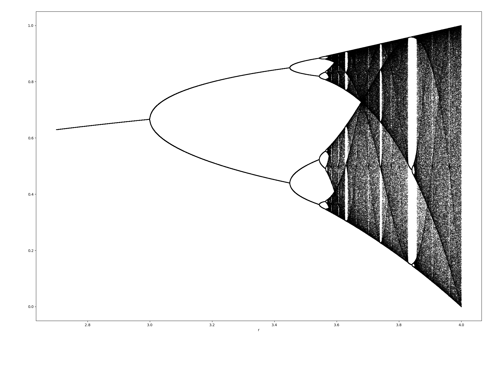

Abschnitt 2
Iterationen
Definition: Iteration
Eine Iteration beschreibt einen Prozess mehrfachen Wiederholens gleicher Operationen. Für unsere Zwecke bedeutet dies konkret: Wir beginnen mit einer Zahl (Startwert) x₀ und führen damit eine Rechnung aus. Dann wenden wir dieselbe Rechnung auf das Resultat x₁ an. Danach wenden wir dieselbe Rechnung auf das neue Resultat x₂ an, usw.
In Formeln bedeutet dies x₁ = f(x₀), x₂ = f(x₁), x₃ = f(x₂), …, wobei f eine festgelegte Funktion ist. Man nennt f auch Trägerfunktion.
Definition: (Vor-)Fixpunkt
Ein Fixpunkt ist eine Zahl, die durch eine gegebene Abbildung auf sich selbst abgebildet wird. Im Fall einer Iteration bedeutet dies, dass die Zahlenfolge konstant wird, wenn wir mit einem Fixpunkt als Startwert beginnen. In Formeln x₀ = x₁ = x₂ = x₃ = …
Ein Vorfixpunkt ist eine Zahl, die selbst kein Fixpunkt ist, die aber nach einer Iteration zu einem Fixpunkt führt.
Definition: Attraktor
Ein Attraktor (oder ein Häufungspunkt) ist ein Grenzwert einer Teilfolge von iterierten Zahlen. Es ist eine Zahl, welche die Folgenglieder gleichsam zu sich zieht.
Beispiel. Iteration xn = 0.7·xn−1 + 2
Werden die Folgeglieder immer grösser bzw. kleiner, oder gibt es eine Grenze? Was ergibt sich für verschiedene Startwerte? Hat diese Iteration weitere Fixpunkte, oder gibt es nur einen? Probieren Sie in der Werkbank oben weitere Startwerte aus.
Das Spinnwebdiagramm
Ein sogenanntes Spinnwebdiagramm bietet die Möglichkeit, das Verhalten einer Iteration grafisch zu überblicken. Dazu gehen wir wie folgt vor:
- Wir zeichnen den Graph der Trägerfunktion f ein.
- Wir zeichnen die erste Winkelhalbierende y = x ein.
- Wir markieren auf der x-Achse den Startwert x₀.
- Von dort bewegen wir uns in y-Richtung auf den Graphen der Trägerfunktion.
- Anschliessend geht es in x-Richtung auf die erste Winkelhalbierende.
- Wir springen zurück zu Schritt 4.
Beispiel. Spinnwebdiagramm von f(x) = 0.7x + 2, Startwert x₀ = 1
Die Fixpunkte einer Iteration sind im Spinnwebdiagramm als Schnittpunkte von der Winkelhalbierenden mit der Trägerfunktion sichtbar.
Weitere Beispiele
Wir betrachten die Iteration xn = xn−1² −
1: Im Spinnwebdiagramm werden zwei abstossende Fixpunkte
sichtbar, sowie die beiden Attraktoren 0 und −1. Bei xn
= xn−1² − 0.5 zeigt sich dagegen ein abstossender
und ein anziehender Fixpunkt. Verändern Sie in der Werkbank
oben die Funktion f zu
x**2 - 1 bzw. x**2 - 0.5 und
probieren Sie es selbst aus (mit x0 = 1.17).
Exponentielles Wachstum und Zerfall
Die Iteration xn = xn−1 + r · xn−1 nennt man exponentielles Wachstum: Die Grösse wird in jedem Zeitschritt um denselben Anteil r vergrössert (r > 0) bzw. verkleinert (r < 0, exponentieller Zerfall). Die Trägerfunktion lautet f(x) = x + r·x.
Logistisches Wachstum
Im 19. Jahrhundert versuchte man mathematische Modelle für biologische Prozesse zu entwickeln. Ungehemmte biologische Vermehrung wird durch exponentielles Wachstum sinnvoll beschrieben, doch das kommt in Wirklichkeit so gut wie nie vor: Die meisten Populationen entwickeln sich stattdessen hin zu einem biologischen Gleichgewicht. Daher erscheint es sinnvoll, den Zuwachs sowohl proportional zum momentanen Bestand als auch zum Abstand von einer Grenze bzw. Schranke S anzunehmen. Dieses Modell führt zur Iteration
xn = xn−1 + r · xn−1 · (S − xn−1).
Diese Iteration wird logistische Iteration genannt, ihre Trägerfunktion f(x) = x + r·x·(S − x) die logistische Parabel. In den beiden Konstanten r und S kann man sich die biologischen Parameter untergebracht denken, zum Beispiel Geburts- und Sterberaten, Nahrungsangebot, verfügbarer Platz usw.
Beispiel. Logistisches Wachstum, r = 0.1, S = 8
Das Schaefer'sche Modell
Bereits bekannte Modelle lassen sich natürlich beliebig erweitern. Ein Beispiel dafür ist das Schaefer'sche Modell. Es beschreibt die Entwicklung einer logistisch wachsenden Population, die unter Bejagung steht. Dabei wird davon ausgegangen, dass in jedem Zeitschritt ein fester relativer Anteil a der Population durch die Jagd getötet wird.
xn = xn−1 + r·xn−1·(S − xn−1) − a·xn−1
Die Übungen dazu finden Sie in Abschnitt 3.
Übungen
Wir betrachten Zahlenfolgen, die durch das laufende Quadrieren einer Zahl entstehen. Formal lässt sich diese Iteration beschreiben als xn = xn−1². Dabei muss noch ein Startwert vorgegeben werden.
- Berechnen Sie die Fix- und Vorfixpunkte dieser Iteration.
- Wie viele Iterationsschritte sind nötig, um von 1.01 ausgehend 100 zu überschreiten?
- Wie ist es, wenn man von 1.001 ausgeht?
- Wie viele Iterationsschritte sind nötig, um von 0.99 ausgehend 0.01 zu unterschreiten?
- Wie ist es, wenn man von 0.999 ausgeht?
Lösungsvorschlag
- Fixpunkte: 0 und 1; Vorfixpunkt: −1
- 9
- 13
- 9
- 13
Lösungsvorschlag (quadr.py)
Schreiben Sie ein Python-Programm, das zu einer Trägerfunktion f, einem Startwert x₀ und einer Zahl n das entsprechende Spinnwebdiagramm für die ersten n Schritte zeichnet.
Hinweis: Orientieren Sie sich am Beispiel weiter
oben — dort ist f aber fest einprogrammiert.
Verpacken Sie den Zeichenteil in eine Funktion
spinnweb(f, x0, n), die für jede beliebige
Trägerfunktion funktioniert.
Wir betrachten die Iteration xn = xn−1² + r und wählen zuerst r = −1. Versuchen Sie einerseits die folgenden Fragen zu beantworten. Verwenden Sie aber auch ein Spinnwebdiagramm, um eine Übersicht über diese Iteration zu bekommen.
- Welches Grenzverhalten ergibt sich für die entstehenden Folgenglieder für x₀ = 0.5?
- Existiert für diese Iteration ein Fixpunkt?
- Vergleichen Sie die ersten zehn Iterationsschritte für x₀ = 1.61 und x₀ = 1.62.
- Welche Zahl entsteht nach 10 Iterationsschritten aus x₀ = 1.6 und welche nach 11 Iterationsschritten?
- Entsprechend mit x₀ = 1.61802, x₀ = 1.61803 bzw. x₀ = 1.61804?
Lösungsvorschlag
- Die Werte nähern sich der alternierenden Folge −1, 0, −1, 0, …
- Es gibt zwei Fixpunkte: x = (1+√5)/2 ≈ 1.618 und x = (1−√5)/2 ≈ −0.618.
- Für x₀=1.61 bleiben die Werte über 10 Schritte beschränkt, für x₀=1.62 wachsen sie explosionsartig bis über 3.7·10¹⁰ — kleinster Unterschied im Startwert, radikal anderes Verhalten (siehe Werkbank).
- Mit x₀=1.6: x₁₀ ≈ −3.4·10⁻⁶, x₁₁ ≈ −0.99999999999.
- Mit x₀=1.61802: x₁₀ ≈ 0.239, x₁₁ ≈ −0.943. Mit x₀=1.61804: x₁₀ ≈ 2.458, x₁₁ ≈ 5.043 — auch hier trennen sich die Bahnen nach wenigen Schritten völlig.
Lösungsvorschlag (recursion1.py)
Wir betrachten nochmals die Iteration xn = xn−1² + r.
- Für welche Werte von r hat diese Iteration keine Fixpunkte?
- Für welche Werte von r hat diese Iteration genau einen Fixpunkt? Berechnen Sie diesen Fixpunkt. Ist dieser Fixpunkt anziehend oder abstossend?
- Vergleichen Sie die beiden Iterationen für r = −0.4 und r = −0.8. Sind die Fixpunkte anziehend oder abstossend?
- Bei welchem Wert von r wechselt der kleinere Fixpunkt von anziehend zu abstossend?
- Wann ist ein Fixpunkt anziehend bzw. abstossend? Können Sie eine Regel formulieren?
Lösungsvorschlag
- Für r > 1/4.
- Für r = 1/4 hat die Iteration genau einen Fixpunkt bei x = 1/2. Dieser Fixpunkt ist abstossend.
- Für r = −0.4 ist ein Fixpunkt anziehend und einer abstossend. Für r = −0.8 sind beide Fixpunkte abstossend.
- Bei r = −3/4.
- Der Betrag der Steigung der Trägerfunktion beim Fixpunkt ist entscheidend. Ist dieser > 1, ist der Fixpunkt abstossend. Ist dieser < 1, ist der Fixpunkt anziehend. Ist der Betrag genau gleich 1, ist beides möglich.
Was lässt sich über die Iteration xn = −xn−1 + r sagen? Fixpunkte? Attraktoren?
Lösungsvorschlag
Diese Iteration hat einen Fixpunkt bei x = r/2. Dieser ist abstossend. Genauer alterniert die entsprechende Folge, sobald ein anderer Wert als der Fixpunkt eingesetzt wird.
Wir betrachten die Iteration xn = r · xn−1 · (1 − xn−1) und gehen für alle Teilaufgaben vom gleichen Startwert x₀ = 0.5 aus.
- Untersuchen Sie diese Iteration für die verschiedenen r-Werte: r=2.8, r=3.2, r=3.8 und r=3.85.
- Schreiben Sie ein Programm, welches ein sogenanntes Attraktordiagramm (oder Feigenbaumdiagramm oder Bifurkationsdiagramm) erzeugt. Die Idee dabei ist, dass man r auf der x-Achse aufträgt und in einem gewissen Bereich für jedes r zuerst 100 Iterationen im Dunkeln berechnet und dann die nächsten 100 Iterationswerte in y-Richtung aufträgt. Bei einem bestimmten r-Wert werden dann eventuell 100 verschiedene (chaotisch verteilte) y-Werte sichtbar. Für einen anderen r-Wert könnten dagegen alle 100 Werte gleich gross sein, so dass dort nur ein einziger Punkt (Attraktor) sichtbar wird usw.
{kind=link}
Lösungsvorschlag

Dieser Code rechnet 10'000 × 2000 Iterationen und
dauert selbst nativ mehrere Sekunden — im Browser via
Pyodide ist das unpraktisch langsam. Diese Werkbank
führt den Code darum nicht live aus; probieren
Sie ihn stattdessen lokal aus (siehe
Abschnitt 1), notfalls mit kleineren Werten für nr
und steps.
Unter diesem Video finden Sie weitere spannende Informationen zu diesem Diagramm.
In einem Fischzuchtbecken befinden sich zunächst 800 Fische. Im ersten Jahr ist mit einer Wachstumsrate von 54% zu rechnen. Die Obergrenze wird von der Züchterin auf 8000 Fische veranschlagt.
- Nehmen Sie logistisches Wachstum an. Berechnen Sie den Faktor r und stellen Sie den Fischbestand für die nächsten 15 Jahre dar.
- In welchem Jahr ist die Zunahme am grössten?
- Wie viele Fische kann die Züchterin nach einem Jahr entnehmen, wenn sie den Ausgangsbestand konstant halten will?
- Wie viele Fische kann die Züchterin ab Ende des dritten Jahres jährlich entnehmen, wenn sie die ersten zwei Jahre keinen Fisch verkauft und von da an den Bestand konstant halten will?
- Sie möchte die nächsten 10 Jahre insgesamt möglichst viele Fische verkaufen. Wie soll sie sich verhalten? Experimentieren Sie mit verschiedenen Möglichkeiten.
Lösungsvorschlag
- Es gilt r = 0.000075 (siehe Diagramm in der Werkbank unten).
- Die Zunahme ist im fünften Jahr am grössten.
- 432 Fische
- ≈ 855.68 Fische
- Wenn sie die ersten fünf Jahre abwartet und dann den Fischbestand konstant hält, kann sie einen Ertrag von ≈ 9772.10 pro Jahr erzielen. Ist dies optimal?
Lösungsvorschlag (fishing.py)
Wir betrachten noch ein Beispiel für einen nicht-logistischen Wachstumsprozess: Ein löchriger Bottich enthält 20 Liter Wasser. Fritzli rennt mit einem Eimer vom nahegelegenen Weiher hin und her und schüttet im Abstand von einer Minute jeweils 5 Liter Wasser in den Bottich. In dieser Minute versickert jeweils 10% des eben noch vorhandenen Inhalts.
- Geben Sie eine Rekursionsvorschrift für diesen Prozess an und stellen Sie den Verlauf für die ersten 50 Minuten dar.
- Bei welcher Füllmenge stabilisiert sich dieser Prozess? Bestimmen Sie dies graphisch und rechnerisch (Fixpunkte bestimmen).
- Was ändert sich, wenn man mit 0 Liter oder mit 100 Liter im Bottich starten würde?
Lösungsvorschlag
xn = 0.9 · xn−1 + 5
Lösungsvorschlag (bottich.py)
Die Füllmenge stabilisiert sich bei 50 Liter — egal ob man mit 0 oder mit 100 Liter startet.